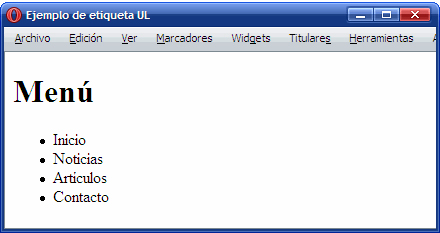

¿Qué son las etiquetas semánticas?
Esas son las etiquetas semánticas, que ganan mucha importancia en el marco del HTML y de la composición de un documento web por ayudar a motores de búsqueda como Google a indexar más correctamente los contenidos de un sitio.
¿Qué es un enlace en un sitio web?

Un enlace o link es texto o imágenes en un sitio web que un usuario puede pinchar para tener acceso o conectar con otro documento. Los enlaces son como la tecnología que conecta dos sitios web o dos páginas web. En el navegador se ven como palabras subrayadas (como Ir al índice de FAQ's al final de ésta página).
Listas HTML
Una lista de descripción, que consiste en grupos de nombre-valor, y que se conoce como una lista de definición antes de HTML5. Descripción de las listas están destinadas a grupos de "términos y definiciones, temas y valores de metadatos, preguntas y respuestas, o cualquier otro grupo de datos de nombre-valor".